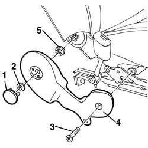
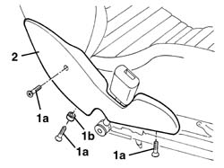

7045A44 seat interior guard - r r
- Path
- Procedures > 70 FITTINGS > 7045 FRONT SEATS > 7045A front seat assembly > 7045A44 seat interior guard - r r
- Kind
- repair procedure (removal / refitting; the operation number is the code)
- Applies to
- all engines; all production periods
- Interactive page
- https://sloeber94.github.io/elrnDB-a156/en/#/3238873
Applies to: all engines; all production periods
 Removing
Removing
 Refitting
Refitting7045A10 l/h or r/h front seat (one) - r+r
1. Remove the cover.
2. Withdraw the retaining clip.
3. Unscrew the bolt.
4. Remove the inner guard.
5. Recover the shaped washer.

Applies to: all engines; all production periods
Refitting
RemovingCheck that the guard is undamaged.
Fit the washer.
Position the inner trim.
Tighten the bolt.
Fit the retaining spring.
Fit the cover.
Applies to: engines: 3.2 V6; all production periods; only with equipment: GTA
Removing
Refitting7045A10 l/h or r/h front seat (one) - r+r
1. Undo the bolts (1a) and keep the spacer (1b) positioned inside the guard.
3. Remove the inner guard.

Applies to: engines: 3.2 V6; all production periods; only with equipment: GTA
Refitting
RemovingCheck that the inner guard is not damaged.
Position the spacer and fasten the guard using the bolts.
Topics linked from this page (1)
Topics that link to this page (26)
- S65 SEATS CREAKING
- 5580C44 front side bag module one lh or rh r r
- 5580C86 side bag wiring harness (one) lh or rh - r r or replace
- 5580C92 connecting lead in seat for side air bag module r r
- 7045A14 Front seat CUSHION ASSEMBLY (one), left or right - R.R.
- 7045A18 FRONT SEAT BACKREST ASSEMBLY (ONE), LEFT OR RIGHT - R.R.
- 7045A19 BACKREST - CENTRE SECTION - front seat (one, left or right - R.R .
- 7045a38 device for driver`s seat squab lumbar adjustment - r r with seat removed
- 7045A39 device for driver`s seat squab lumbar adjustment - r r
- 7045A62 joints of driver`s side front seat lift device - r r with seat disconnected
- 7045A72 front seat mount/guide - passenger`s side r r with seat removed
- 7045A73 front seat mount/guide - passenger`s side r r
- 7045A80 front seat cushion squab (outer) joint assembly - r r with seat removed
- 7045A82 front seat cushion/squab (interior) joint assembly - r r with seat removed
- 7045A85 Front seat BACKREST COVER, left or right - R.R.
- 7045A86 (One), front SEAT FRAME left or right - R.R.
- 7045A87 Front seat CUSHION COVER, left or right - R.R .
- 7045A88 Front seat BACKREST UPHOLSTERY, left or right - R.R. with seat removed
- 7045A89 Front seat BACKREST UPHOLSTERY, left or right - R.R .
- 7045A90 Front seat CUSHION UPHOLSTERY, left or right - R.R. with seat removed
- 7045A91 Front seat, CUSHION UPHOLSTERY left or right - R.R.
- 7045A98 front seat rear pouch panel, lh or rh - r r
- 7045D24 Front seat CUSHION ASSEMBLY COVER (one), left or right - R.R.
- 7045J34 front seat squab rake motor, l/h or r/h - r+r following electrical wiring check
- 7045M22 l/h or r/h front seat cushion heat pad - r+r following electrical wiring check
- 7045M26 l/h or r/h front seat squab heat pad - r+r following electrical wiring check